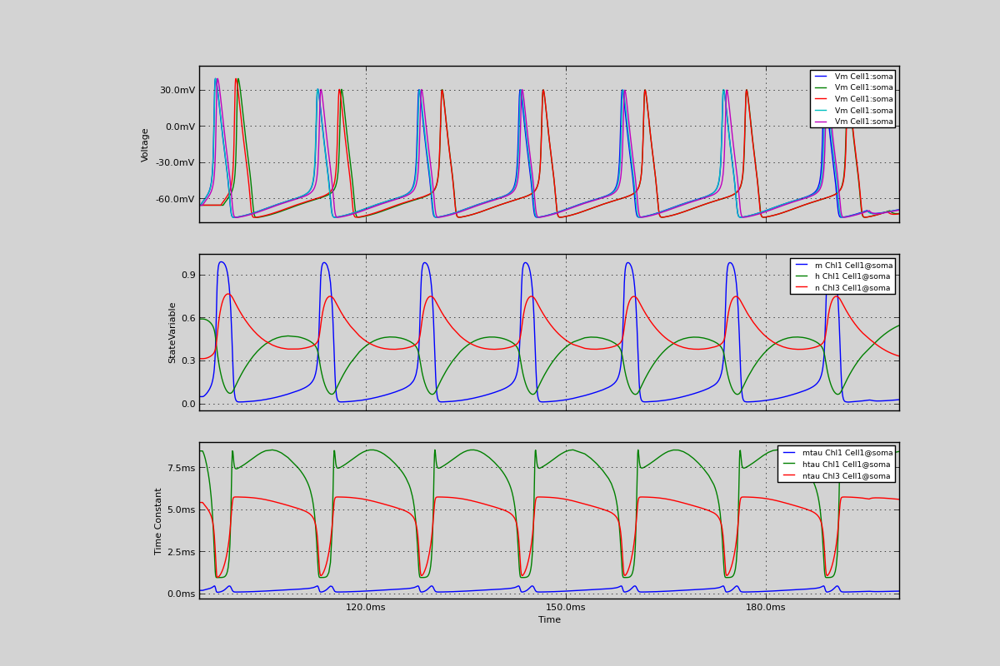

18. Comparing simulations: the Hodgkin-Huxley ‘52 channels
Comparing simulations: the Hodgkin-Huxley ‘52 channels
This simulation compares the different ways of implementing the Hodgkin-Huxley channels; we check that the Hodgkin-Huxley channels built-in to NEURON produce the same results as when we create these channels with parameters as an StdChlAlphaBeta.
In you are not familiar with python, then this is an example of the one of the advantages of the laanguage: functions are objects!
In “test_neuron”, we create a neuron morphology, but put the code to add the channels in a different function. This makes it easy to try out different channel types and distributions easily and quickly.
Code
from morphforgecontrib.simulation.channels.neuroml_via_neurounits.neuroml_via_neurounits_core import NeuroML_Via_NeuroUnits_Channel
from morphforgecontrib.simulation.channels.neurounits.neuro_units_bridge import Neuron_NeuroUnitEqnsetMechanism
from morphforge.stdimports import *
from morphforgecontrib.simulation.channels.hh_style.core.mmleak import StdChlLeak
from morphforgecontrib.simulation.channels.hh_style.core.mmalphabeta import StdChlAlphaBeta
from morphforgecontrib.simulation.channels.simulatorbuiltin.sim_builtin_core import BuiltinChannel
from morphforgecontrib.simulation.channels.neuroml_via_xsl.neuroml_via_xsl_core import NeuroML_Via_XSL_Channel
import random as R
variables = ['h', 'm', 'minf', 'mtau', 'm_alpha_rate', 'm_beta_rate']
def apply_hh_chls_neurounits_direct(env, cell, sim):
eqnset_txt_na = """
define_component chlstd_hh_na {
from std.math import exp
i = g * (v-erev) * m**3*h
minf = m_alpha_rate / (m_alpha_rate + m_beta_rate)
mtau = 1.0 / (m_alpha_rate + m_beta_rate)
m' = (minf-m) / mtau
hinf = h_alpha_rate / (h_alpha_rate + h_beta_rate)
htau = 1.0 / (h_alpha_rate + h_beta_rate)
h' = (hinf-h) / htau
StdFormAB(V, a1, a2, a3, a4, a5) = (a1 + a2*V)/(a3+exp((V+a4)/a5))
m_alpha_rate = StdFormAB(V=v, a1=m_a1, a2=m_a2, a3=m_a3, a4=m_a4, a5=m_a5)
m_beta_rate = StdFormAB(V=v, a1=m_b1, a2=m_b2, a3=m_b3, a4=m_b4, a5=m_b5)
h_alpha_rate = StdFormAB(V=v, a1=h_a1, a2=h_a2, a3=h_a3, a4=h_a4, a5=h_a5)
h_beta_rate = StdFormAB(V=v, a1=h_b1, a2=h_b2, a3=h_b3, a4=h_b4, a5=h_b5)
m_a1 = {-4.00 ms-1}
m_a2 = {-0.10 mV-1 ms-1}
m_a3 = -1.00
m_a4 = {40.00 mV}
m_a5 = {-10.00 mV}
m_b1 = {4.00 ms-1}
m_b2 = {0.00 mV-1 ms-1}
m_b3 = {0.00}
m_b4 = {65.00 mV}
m_b5 = {18.00 mV}
h_a1 = {0.07 ms-1}
h_a2 = {0.00 mV-1 ms-1}
h_a3 = {0.00}
h_a4 = {65.00 mV}
h_a5 = {20.00 mV}
h_b1 = {1.00 ms-1}
h_b2 = {0.00 mV-1 ms-1}
h_b3 = {1.00}
h_b4 = {35.00 mV}
h_b5 = {-10.00 mV}
sg = {120.0mS/cm2}
erev = {50.0mV}
<=> PARAMETER g:(S/m2)
<=> OUTPUT i:(A/m2) METADATA {"mf":{"role":"TRANSMEMBRANECURRENT"} }
<=> INPUT v: V METADATA {"mf":{"role":"MEMBRANEVOLTAGE"} }
}
"""
eqnset_txt_k = """
define_component chlstd_hh_k {
from std.math import exp
i = g * (v-erev) * n*n*n*n
ninf = n_alpha_rate / (n_alpha_rate + n_beta_rate)
ntau = 1.0 / (n_alpha_rate + n_beta_rate)
n' = (ninf-n) / ntau
StdFormAB(V, a1, a2, a3, a4, a5) = (a1 + a2*V)/(a3+exp((V+a4)/a5))
n_alpha_rate = StdFormAB(V=v, a1=n_a1, a2=n_a2, a3=n_a3, a4=n_a4, a5=n_a5)
n_beta_rate = StdFormAB(V=v, a1=n_b1, a2=n_b2, a3=n_b3, a4=n_b4, a5=n_b5)
n_a1 = {-0.55 ms-1}
n_a2 = {-0.01 mV-1 ms-1}
n_a3 = -1.00
n_a4 = {55.00 mV}
n_a5 = {-10.00 mV}
n_b1 = {0.125 ms-1}
n_b2 = {0.00 mV-1 ms-1}
n_b3 = {0.00}
n_b4 = {65.00 mV}
n_b5 = {80.00 mV}
g = {36.0mS/cm2}
erev = {-77.0mV}
<=> OUTPUT i:(A/m2) METADATA {"mf":{"role":"TRANSMEMBRANECURRENT"} }
<=> INPUT v: V METADATA {"mf":{"role":"MEMBRANEVOLTAGE"} }
}
"""
eqnset_txt_lk = """
define_component chlstd_hh_lk {
i = g * (v-erev)
g = {0.3 mS/cm2}
erev = -54.3 mV
<=> OUTPUT i:(A/m2) METADATA {"mf":{"role":"TRANSMEMBRANECURRENT"} }
<=> INPUT v: V METADATA {"mf":{"role":"MEMBRANEVOLTAGE"} }
}
"""
na_chl = Neuron_NeuroUnitEqnsetMechanism(name="Chl1", eqnset=eqnset_txt_na, default_parameters={"g":qty("120:mS/cm2")}, )
lk_chl = Neuron_NeuroUnitEqnsetMechanism(name="Chl2", eqnset=eqnset_txt_lk, )
k_chl = Neuron_NeuroUnitEqnsetMechanism(name="Chl3", eqnset=eqnset_txt_k, )
cell.apply_channel( na_chl)
cell.apply_channel( lk_chl)
cell.apply_channel( k_chl)
sim.record(na_chl, what='m', cell_location= cell.soma, user_tags=[StandardTags.StateVariable])
sim.record(na_chl, what='mtau', cell_location= cell.soma, user_tags=[StandardTags.StateTimeConstant])
sim.record(na_chl, what='h', cell_location= cell.soma, user_tags=[StandardTags.StateVariable])
sim.record(na_chl, what='htau', cell_location= cell.soma, user_tags=[StandardTags.StateTimeConstant])
sim.record(k_chl, what='n', cell_location= cell.soma, user_tags=[StandardTags.StateVariable])
sim.record(k_chl, what='ntau', cell_location= cell.soma, user_tags=[StandardTags.StateTimeConstant])
def apply_hh_chls_neuroml_xsl(env, cell, sim):
lk_chl = env.Channel(
StdChlLeak,
name="LkChl",
conductance=qty("0.3:mS/cm2"),
reversalpotential=qty("-54.3:mV"),
)
na_chl = env.Channel(NeuroML_Via_XSL_Channel,
xml_filename = os.path.join(LocMgr.get_test_srcs_path(), "neuroml/channelml/NaChannel_HH.xml"),
xsl_filename = os.path.join(LocMgr.get_test_srcs_path(), "neuroml/channelml/ChannelML_v1.8.1_NEURONmod.xsl"),
)
k_chl = env.Channel(NeuroML_Via_XSL_Channel,
xml_filename = os.path.join(LocMgr.get_test_srcs_path(), "neuroml/channelml/KChannel_HH.xml"),
xsl_filename = os.path.join(LocMgr.get_test_srcs_path(), "neuroml/channelml/ChannelML_v1.8.1_NEURONmod.xsl"),
)
cell.apply_channel( na_chl)
cell.apply_channel( lk_chl)
cell.apply_channel( k_chl)
def apply_hh_chls_neuroml_neurounits(env, cell, sim):
lk_chl = env.Channel(
StdChlLeak,
name="LkChl",
conductance=qty("0.3:mS/cm2"),
reversalpotential=qty("-54.3:mV"),
)
na_chl = env.Channel(NeuroML_Via_NeuroUnits_Channel,
xml_filename = os.path.join(LocMgr.get_test_srcs_path(), "neuroml/channelml/NaChannel_HH.xml"),
)
k_chl = env.Channel(NeuroML_Via_XSL_Channel,
xml_filename = os.path.join(LocMgr.get_test_srcs_path(), "neuroml/channelml/KChannel_HH.xml"),
xsl_filename = os.path.join(LocMgr.get_test_srcs_path(), "neuroml/channelml/ChannelML_v1.8.1_NEURONmod.xsl"),
)
cell.apply_channel( na_chl)
cell.apply_channel( lk_chl)
cell.apply_channel( k_chl)
def apply_hh_chls_morphforge_format(env, cell, sim):
lk_chl = env.Channel(
StdChlLeak,
name="LkChl",
conductance=qty("0.3:mS/cm2"),
reversalpotential=qty("-54.3:mV"),
)
na_state_vars = { "m": {
"alpha":[-4.00, -0.10, -1.00, 40.00, -10.00],
"beta": [4.00, 0.00, 0.00, 65.00, 18.00]},
"h": {
"alpha":[0.07, 0.00, 0.00, 65.00, 20.00] ,
"beta": [1.00, 0.00, 1.00, 35.00, -10.00]}
}
na_chl = env.Channel(
StdChlAlphaBeta,
name="NaChl", ion="na",
equation="m*m*m*h",
conductance=qty("120:mS/cm2"),
reversalpotential=qty("50:mV"),
statevars=na_state_vars,
)
k_state_vars = { "n": {
"alpha":[-0.55, -0.01, -1.0, 55.0, -10.0],
"beta": [0.125, 0, 0, 65, 80]},
}
k_chl = env.Channel(
StdChlAlphaBeta,
name="KChl", ion="k",
equation="n*n*n*n",
conductance=qty("36:mS/cm2"),
reversalpotential=qty("-77:mV"),
statevars=k_state_vars,
)
cell.apply_channel( lk_chl)
cell.apply_channel( na_chl)
cell.apply_channel( k_chl)
def apply_hh_chls_NEURON_builtin(env, cell, sim):
hhChls = env.Channel(BuiltinChannel, sim_chl_name="hh", )
cell.apply_channel( hhChls)
def simulate_chls_on_neuron(chl_applicator_functor):
# Create the environment:
env = NEURONEnvironment()
# Create the simulation:
sim = env.Simulation()
# Create a cell:
morphDict1 = {'root': {'length': 18.8, 'diam': 18.8, 'id':'soma'} }
m1 = MorphologyTree.fromDictionary(morphDict1)
cell = sim.create_cell(name="Cell1", morphology=m1)
# Setup the HH-channels on the cell:
chl_applicator_functor(env, cell, sim)
# Setup passive channels:
cell.set_passive( PassiveProperty.SpecificCapacitance, qty('1.0:uF/cm2'))
# Create the stimulus and record the injected current:
cc = sim.create_currentclamp(name="Stim1", amp=qty("100:pA"), dur=qty("100:ms"), delay=qty("100:ms") * R.uniform(0.95, 1.0), cell_location=cell.soma)
# Define what to record:
sim.record(cell, what=StandardTags.Voltage, name="SomaVoltage", cell_location = cell.soma)
# run the simulation
results = sim.run()
return results
resultsA =None
resultsB =None
resultsC =None
resultsD =None
resultsE =None
resultsA = simulate_chls_on_neuron(apply_hh_chls_morphforge_format)
resultsB = simulate_chls_on_neuron(apply_hh_chls_NEURON_builtin)
resultsC = simulate_chls_on_neuron(apply_hh_chls_neuroml_neurounits)
resultsD = simulate_chls_on_neuron(apply_hh_chls_neuroml_xsl)
resultsE = simulate_chls_on_neuron(apply_hh_chls_neurounits_direct)
#
trs = [resultsA, resultsB, resultsC, resultsD, resultsE]
trs = [tr for tr in trs if tr is not None]
TagViewer(trs, timerange=(95, 200)*units.ms, show=True)
pylab.show()
Figures

Download Figure
{kind=link}
Output
No handlers could be found for logger "neurounits"
2013-10-19 15:41:21,213 - morphforge.core.logmgr - INFO - Logger Started OK
2013-10-19 15:41:21,213 - DISABLEDLOGGING - INFO - _run_spawn() [Pickling Sim]
No handlers could be found for logger "neurounits"
2013-10-19 15:41:22,797 - morphforge.core.logmgr - INFO - Logger Started OK
2013-10-19 15:41:22,798 - DISABLEDLOGGING - INFO - Ensuring Modfile is built
NEURON -- Release 7.1 (359:7f113b76a94b) 2009-10-26
Duke, Yale, and the BlueBrain Project -- Copyright 1984-2008
See http://www.neuron.yale.edu/credits.html
Openning ScriptFlags
/auto/homes/mh735/hw/NeuroUnits/ext_deps
Loading StdLib file: /auto/homes/mh735/hw/NeuroUnits/src/neurounits/../stdlib/stdlib.eqn
Loading Bundle from: /local/scratch/mh735/tmp/morphforge/tmp/simulationresults/1e/1e842daf4232077c50adc8f5570069f3.bundle (11k) : 0.795 seconds
set(['conductance', 'reversalpotential'])
__dict__ {'mm_neuronNumber': None, 'cachedNeuronSuffix': None, 'reversalpotential': array(-54.3) * mV, '_name': 'LkChl', '_simulation': None, 'conductance': array(3.0) * s**3*A**2/(kg*m**4)}
loading membrane mechanisms from /local/scratch/mh735/tmp/morphforge/tmp/modout/mod_468d766f8a3c48bce3bbb5aa16488aa9.so
loading membrane mechanisms from /local/scratch/mh735/tmp/morphforge/tmp/modout/mod_10528623af7b919560a2e2606bf0cd9c.so
loading membrane mechanisms from /local/scratch/mh735/tmp/morphforge/tmp/modout/mod_e53416588be6b02ed52a843da0f43a15.so
1
1
0.01
0
1
50000
1
Running Simulation
Time for Extracting Data: (1 records) 0.000784873962402
Running simulation : 0.137 seconds
Post-processing : 0.003 seconds
Entire load-run-save time : 0.935 seconds
Suceeded
No handlers could be found for logger "neurounits"
NEURON -- Release 7.1 (359:7f113b76a94b) 2009-10-26
Duke, Yale, and the BlueBrain Project -- Copyright 1984-2008
See http://www.neuron.yale.edu/credits.html
Openning ScriptFlags
/auto/homes/mh735/hw/NeuroUnits/ext_deps
Loading StdLib file: /auto/homes/mh735/hw/NeuroUnits/src/neurounits/../stdlib/stdlib.eqn
Loading Bundle from: /local/scratch/mh735/tmp/morphforge/tmp/simulationresults/41/4131778966e431219887922ec7108f8b.bundle (9k) : 0.781 seconds
1
1
0.01
0
1
50000
1
Running Simulation
Time for Extracting Data: (1 records) 0.000565052032471
Running simulation : 0.079 seconds
Post-processing : 0.003 seconds
Entire load-run-save time : 0.862 seconds
Suceeded
/auto/homes/mh735/hw/NeuroUnits/ext_deps
Openning ScriptFlags
Loading StdLib file: /auto/homes/mh735/hw/NeuroUnits/src/neurounits/../stdlib/stdlib.eqn
Loading Channel Type: NaChannel
[('m', 'm_inf'), ('h', 'h_inf')]
CHECKING
<Parameter [id:76978576] Symbol: 'VREV' >
VREV
iii 1.0 kg*m**2/(s**3*A) <class 'quantities.quantity.Quantity'>
iiii 0.05 kg*m**2/(s**3*A) <class 'quantities.quantity.Quantity'>
OK
CHECKING
<Parameter [id:76977488] Symbol: 'GMAX' >
GMAX
iii 1.0 s**3*A**2/(kg*m**4) <class 'quantities.quantity.Quantity'>
iiii 1200.0 s**3*A**2/(kg*m**4) <class 'quantities.quantity.Quantity'>
OK
Output <StateVariable [id:76964816] Symbol: 'h' >
None
Output <StateVariable [id:76965200] Symbol: 'm' >
None
Output <AssignedVariable [id:76976464] Symbol: 'GATEPROP' >
None
Output <AssignedVariable [id:76967056] Symbol: 'I' >
{u'mf': {u'role': u'TRANSMEMBRANECURRENT'}}
Output <AssignedVariable [id:76966864] Symbol: 'g' >
None
Output <AssignedVariable [id:76976272] Symbol: 'h_alpha' >
None
Output <AssignedVariable [id:76976656] Symbol: 'h_beta' >
None
Output <AssignedVariable [id:76967440] Symbol: 'h_inf' >
None
Output <AssignedVariable [id:76966672] Symbol: 'h_tau' >
None
Output <AssignedVariable [id:76966288] Symbol: 'm_alpha' >
None
Output <AssignedVariable [id:76967824] Symbol: 'm_beta' >
None
Output <AssignedVariable [id:76966480] Symbol: 'm_inf' >
None
Output <AssignedVariable [id:76967632] Symbol: 'm_tau' >
None
input <SuppliedValue [id:76979792] Symbol: 'V' >
{u'mf': {u'role': u'MEMBRANEVOLTAGE'}}
V <class 'neurounits.ast.astobjects.SuppliedValue'>
T [<class 'neurounits.ast.astobjects.MulOp'>]
V <class 'neurounits.ast.astobjects.SuppliedValue'>
T [<class 'neurounits.ast.astobjects.DivOp'>]
V <class 'neurounits.ast.astobjects.SuppliedValue'>
g <class 'neurounits.ast.astobjects.AssignedVariable'>
V <class 'neurounits.ast.astobjects.SuppliedValue'>
VREV <class 'neurounits.ast.astobjects.Parameter'>
T [<class 'neurounits.ast.astobjects.DivOp'>]
V <class 'neurounits.ast.astobjects.SuppliedValue'>
m_alpha <class 'neurounits.ast.astobjects.AssignedVariable'>
m_alpha <class 'neurounits.ast.astobjects.AssignedVariable'>
m_beta <class 'neurounits.ast.astobjects.AssignedVariable'>
T [<class 'neurounits.ast.astobjects.DivOp'>]
V <class 'neurounits.ast.astobjects.SuppliedValue'>
m_alpha <class 'neurounits.ast.astobjects.AssignedVariable'>
m_beta <class 'neurounits.ast.astobjects.AssignedVariable'>
h_alpha <class 'neurounits.ast.astobjects.AssignedVariable'>
h_alpha <class 'neurounits.ast.astobjects.AssignedVariable'>
h_beta <class 'neurounits.ast.astobjects.AssignedVariable'>
h_alpha <class 'neurounits.ast.astobjects.AssignedVariable'>
h_beta <class 'neurounits.ast.astobjects.AssignedVariable'>
m <class 'neurounits.ast.astobjects.StateVariable'>
m <class 'neurounits.ast.astobjects.StateVariable'>
m <class 'neurounits.ast.astobjects.StateVariable'>
h <class 'neurounits.ast.astobjects.StateVariable'>
GMAX <class 'neurounits.ast.astobjects.Parameter'>
GATEPROP <class 'neurounits.ast.astobjects.AssignedVariable'>
Writing assignment for: <EqnAssignmentByRegime [id:76976784] Symbol: h_beta >
T [<class 'neurounits.ast.astobjects.DivOp'>]
V <class 'neurounits.ast.astobjects.SuppliedValue'>
Writing assignment for: <EqnAssignmentByRegime [id:76976208] Symbol: m_beta >
T [<class 'neurounits.ast.astobjects.DivOp'>]
V <class 'neurounits.ast.astobjects.SuppliedValue'>
Writing assignment for: <EqnAssignmentByRegime [id:76966416] Symbol: m_alpha >
V <class 'neurounits.ast.astobjects.SuppliedValue'>
T [<class 'neurounits.ast.astobjects.MulOp'>]
V <class 'neurounits.ast.astobjects.SuppliedValue'>
Writing assignment for: <EqnAssignmentByRegime [id:76966608] Symbol: m_inf >
m_alpha <class 'neurounits.ast.astobjects.AssignedVariable'>
m_alpha <class 'neurounits.ast.astobjects.AssignedVariable'>
m_beta <class 'neurounits.ast.astobjects.AssignedVariable'>
Writing assignment for: <EqnAssignmentByRegime [id:76976400] Symbol: h_alpha >
T [<class 'neurounits.ast.astobjects.DivOp'>]
V <class 'neurounits.ast.astobjects.SuppliedValue'>
Writing assignment foNo handlers could be found for logger "neurounits"
2013-10-19 15:41:26,567 - morphforge.core.logmgr - INFO - Logger Started OK
2013-10-19 15:41:26,567 - DISABLEDLOGGING - INFO - Ensuring Modfile is built
NEURON -- Release 7.1 (359:7f113b76a94b) 2009-10-26
Duke, Yale, and the BlueBrain Project -- Copyright 1984-2008
See http://www.neuron.yale.edu/credits.html
Openning ScriptFlags
/auto/homes/mh735/hw/NeuroUnits/ext_deps
Loading StdLib file: /auto/homes/mh735/hw/NeuroUnits/src/neurounits/../stdlib/stdlib.eqn
Loading Bundle from: /local/scratch/mh735/tmp/morphforge/tmp/simulationresults/4d/4d446482aa426b024707502ca2ed2406.bundle (82k) : 0.838 seconds
set(['conductance', 'reversalpotential'])
__dict__ {'mm_neuronNumber': None, 'cachedNeuronSuffix': None, 'reversalpotential': array(-54.3) * mV, '_name': 'LkChl', '_simulation': None, 'conductance': array(3.0) * s**3*A**2/(kg*m**4)}
Executing: /opt/nrn//x86_64/bin/modlunit /local/scratch/mh735/tmp/morphforge/tmp/tmp_7a942b404f071c0c8a9dbe74da5c9220.mod
/local/scratch/mh735/tmp/morphforge/tmp/modbuild_16993
Executing: /opt/nrn//x86_64/bin/nocmodl tmp_7a942b404f071c0c8a9dbe74da5c9220.mod
Executing: /opt/nrn//share/nrn/libtool --mode=compile gcc -DHAVE_CONFIG_H -I"." -I".." -I"/opt/nrn//include/nrn" -I"/opt/nrn//x86_64/lib" -g -O2 -c -o tmp_7a942b404f071c0c8a9dbe74da5c9220.lo tmp_7a942b404f071c0c8a9dbe74da5c9220.c
Executing: /opt/nrn//share/nrn/libtool --mode=link gcc -module -g -O2 -shared -o tmp_7a942b404f071c0c8a9dbe74da5c9220.la -rpath /opt/nrn//x86_64/libs tmp_7a942b404f071c0c8a9dbe74da5c9220.lo -L/opt/nrn//x86_64/lib -L/opt/nrn//x86_64/lib /opt/nrn//x86_64/lib/libnrniv.la -lnrnoc -loc -lmemacs -lnrnmpi -lscopmath -lsparse13 -lreadline -lncurses -livoc -lneuron_gnu -lmeschach -lsundials -lm -ldl
OP1: libtool: compile: gcc -DHAVE_CONFIG_H -I. -I.. -I/opt/nrn//include/nrn -I/opt/nrn//x86_64/lib -g -O2 -c tmp_7a942b404f071c0c8a9dbe74da5c9220.c -fPIC -DPIC -o .libs/tmp_7a942b404f071c0c8a9dbe74da5c9220.o
OP2: libtool: link: gcc -shared .libs/tmp_7a942b404f071c0c8a9dbe74da5c9220.o -Wl,-rpath -Wl,/opt/nrn/x86_64/lib -Wl,-rpath -Wl,/opt/nrn/x86_64/lib -L/opt/nrn//x86_64/lib /opt/nrn/x86_64/lib/libnrniv.so /opt/nrn/x86_64/lib/libnrnoc.so /opt/nrn/x86_64/lib/liboc.so /opt/nrn/x86_64/lib/libmemacs.so /opt/nrn/x86_64/lib/libnrnmpi.so /opt/nrn/x86_64/lib/libscopmath.so /opt/nrn/x86_64/lib/libsparse13.so -lreadline -lncurses /opt/nrn/x86_64/lib/libivoc.so /opt/nrn/x86_64/lib/libneuron_gnu.so /opt/nrn/x86_64/lib/libmeschach.so /opt/nrn/x86_64/lib/libsundials.so -lm -ldl -pthread -Wl,-soname -Wl,tmp_7a942b404f071c0c8a9dbe74da5c9220.so.0 -o .libs/tmp_7a942b404f071c0c8a9dbe74da5c9220.so.0.0.0
libtool: link: (cd ".libs" && rm -f "tmp_7a942b404f071c0c8a9dbe74da5c9220.so.0" && ln -s "tmp_7a942b404f071c0c8a9dbe74da5c9220.so.0.0.0" "tmp_7a942b404f071c0c8a9dbe74da5c9220.so.0")
libtool: link: (cd ".libs" && rm -f "tmp_7a942b404f071c0c8a9dbe74da5c9220.so" && ln -s "tmp_7a942b404f071c0c8a9dbe74da5c9220.so.0.0.0" "tmp_7a942b404f071c0c8a9dbe74da5c9220.so")
libtool: link: ( cd ".libs" && rm -f "tmp_7a942b404f071c0c8a9dbe74da5c9220.la" && ln -s "../tmp_7a942b404f071c0c8a9dbe74da5c9220.la" "tmp_7a942b404f071c0c8a9dbe74da5c9220.la" )
loading membrane mechanisms from /local/scratch/mh735/tmp/morphforge/tmp/modout/mod_20a36dfade43ab4200c87626dc9a4d92.so
loading membrane mechanisms from /local/scratch/mh735/tmp/morphforge/tmp/modout/mod_f0d9052fdfd19f720a7dd9bd9e578ef4.so
loading membrane mechanisms from /local/scratch/mh735/tmp/morphforge/tmp/modout/mod_e1d9b15c15cf730d6ad5de223a1b3007.so
1
1
0.01
0
1
50000
1
Running Simulation
Time for Extracting Data: (1 records) 0.000641107559204
Running simulation : 0.610 seconds
Post-processing : 0.011 seconds
Entire load-run-save time : 1.460 seconds
Suceeded
No handlers could be found for logger "neurounits"
2013-10-19 15:41:28,860 - morphforge.core.logmgr - INFO - Logger Started OK
2013-10-19 15:41:28,860 - DISABLEDLOGGING - INFO - Ensuring Modfile is built
NEURON -- Release 7.1 (359:7f113b76a94b) 2009-10-26
Duke, Yale, and the BlueBrain Project -- Copyright 1984-2008
See http://www.neuron.yale.edu/credits.html
Openning ScriptFlags
/auto/homes/mh735/hw/NeuroUnits/ext_deps
Loading StdLib file: /auto/homes/mh735/hw/NeuroUnits/src/neurounits/../stdlib/stdlib.eqn
Loading Bundle from: /local/scratch/mh735/tmp/morphforge/tmp/simulationresults/e7/e7041ab2ca9c366d96ac1a554ca1decd.bundle (20k) : 0.837 seconds
set(['conductance', 'reversalpotential'])
__dict__ {'mm_neuronNumber': None, 'cachedNeuronSuffix': None, 'reversalpotential': array(-54.3) * mV, '_name': 'LkChl', '_simulation': None, 'conductance': array(3.0) * s**3*A**2/(kg*m**4)}
loading membrane mechanisms from /local/scratch/mh735/tmp/morphforge/tmp/modout/mod_0399d8f72ddafed0d172aeb0b7707773.so
loading membrane mechanisms from /local/scratch/mh735/tmp/morphforge/tmp/modout/mod_a290c9a645340023c23922c59afedba8.so
loading membrane mechanisms from /local/scratch/mh735/tmp/morphforge/tmp/modout/mod_f0d9052fdfd19f720a7dd9bd9e578ef4.so
1
1
0.01
0
1
50000
1
Running Simulation
Time for Extracting Data: (1 records) 0.000568151473999
Running simulation : 0.115 seconds
Post-processing : 0.005 seconds
Entire load-run-save time : 0.958 seconds
Suceeded
r: <EqnAssignmentByRegime [id:76967568] Symbol: h_inf >
h_alpha <class 'neurounits.ast.astobjects.AssignedVariable'>
h_alpha <class 'neurounits.ast.astobjects.AssignedVariable'>
h_beta <class 'neurounits.ast.astobjects.AssignedVariable'>
Writing assignment for: <EqnAssignmentByRegime [id:76976592] Symbol: GATEPROP >
m <class 'neurounits.ast.astobjects.StateVariable'>
m <class 'neurounits.ast.astobjects.StateVariable'>
m <class 'neurounits.ast.astobjects.StateVariable'>
h <class 'neurounits.ast.astobjects.StateVariable'>
Writing assignment for: <EqnAssignmentByRegime [id:76966992] Symbol: g >
GMAX <class 'neurounits.ast.astobjects.Parameter'>
GATEPROP <class 'neurounits.ast.astobjects.AssignedVariable'>
Writing assignment for: <EqnAssignmentByRegime [id:76967184] Symbol: I >
g <class 'neurounits.ast.astobjects.AssignedVariable'>
V <class 'neurounits.ast.astobjects.SuppliedValue'>
VREV <class 'neurounits.ast.astobjects.Parameter'>
Writing assignment for: <EqnAssignmentByRegime [id:76967760] Symbol: m_tau >
m_alpha <class 'neurounits.ast.astobjects.AssignedVariable'>
m_beta <class 'neurounits.ast.astobjects.AssignedVariable'>
Writing assignment for: <EqnAssignmentByRegime [id:76966800] Symbol: h_tau >
h_alpha <class 'neurounits.ast.astobjects.AssignedVariable'>
h_beta <class 'neurounits.ast.astobjects.AssignedVariable'>
m_inf <class 'neurounits.ast.astobjects.AssignedVariable'>
m <class 'neurounits.ast.astobjects.StateVariable'>
m_tau <class 'neurounits.ast.astobjects.AssignedVariable'>
h_inf <class 'neurounits.ast.astobjects.AssignedVariable'>
h <class 'neurounits.ast.astobjects.StateVariable'>
h_tau <class 'neurounits.ast.astobjects.AssignedVariable'>
Loading Channel Type: KConductance
Loading Channel Type: NaChannel
Loading Channel Type: KConductance
CHECKING
<Parameter [id:78856784] Symbol: 'g' >
g
iii 1.0 s**3*A**2/(kg*m**4) <class 'quantities.quantity.Quantity'>
iiii 1200.0 s**3*A**2/(kg*m**4) <class 'quantities.quantity.Quantity'>
OK
Output <StateVariable [id:78856400] Symbol: 'h' >
None
Output <StateVariable [id:78858576] Symbol: 'm' >
None
Output <AssignedVariable [id:79960272] Symbol: 'h_alpha_rate' >
None
Output <AssignedVariable [id:79960656] Symbol: 'h_beta_rate' >
None
Output <AssignedVariable [id:79959888] Symbol: 'hinf' >
None
Output <AssignedVariable [id:79959760] Symbol: 'htau' >
None
Output <AssignedVariable [id:78697552] Symbol: 'i' >
{u'mf': {u'role': u'TRANSMEMBRANECURRENT'}}
Output <AssignedVariable [id:79961552] Symbol: 'm_alpha_rate' >
None
Output <AssignedVariable [id:78699920] Symbol: 'm_beta_rate' >
None
Output <AssignedVariable [id:79960976] Symbol: 'minf' >
None
Output <AssignedVariable [id:79958992] Symbol: 'mtau' >
None
input <SuppliedValue [id:78700176] Symbol: 'v' >
{u'mf': {u'role': u'MEMBRANEVOLTAGE'}}
T [<class 'neurounits.ast.astobjects.SymbolicConstant'>, <class 'neurounits.ast.astobjects.SymbolicConstant'>, <class 'neurounits.ast.astobjects.SymbolicConstant'>, <class 'neurounits.ast.astobjects.SymbolicConstant'>, <class 'neurounits.ast.astobjects.SymbolicConstant'>, <class 'neurounits.ast.astobjects.SuppliedValue'>]
v <class 'neurounits.ast.astobjects.SuppliedValue'>
m_alpha_rate <class 'neurounits.ast.astobjects.AssignedVariable'>
m_alpha_rate <class 'neurounits.ast.astobjects.AssignedVariable'>
m_beta_rate <class 'neurounits.ast.astobjects.AssignedVariable'>
T [<class 'neurounits.ast.astobjects.SymbolicConstant'>, <class 'neurounits.ast.astobjects.SymbolicConstant'>, <class 'neurounits.ast.astobjects.SymbolicConstant'>, <class 'neurounits.ast.astobjects.SymbolicConstant'>, <class 'neurounits.ast.astobjects.SymbolicConstant'>, <class 'neurounits.ast.astobjects.SuppliedValue'>]
v <class 'neurounits.ast.astobjects.SuppliedValue'>
m_alpha_rate <class 'neurounits.ast.astobjects.AssignedVariable'>
m_beta_rate <class 'neurounits.ast.astobjects.AssignedVariable'>
h_alpha_rate <class 'neurounits.ast.astobjects.AssignedVariable'>
h_alpha_rate <class 'neurounits.ast.astobjects.AssignedVariable'>
h_beta_rate <class 'neurounits.ast.astobjects.AssignedVariable'>
g <class 'neurounits.ast.astobjects.Parameter'>
v <class 'neurounits.ast.astobjects.SuppliedValue'>
m <class 'neurounits.ast.astobjects.StateVariable'>
h <class 'neurounits.ast.astobjects.StateVariable'>
h_alpha_rate <class 'neurounits.ast.astobjects.AssignedVariable'>
h_beta_rate <class 'neurounits.ast.astobjects.AssignedVariable'>
T [<class 'neurounits.ast.astobjects.SymbolicConstant'>, <class 'neurounits.ast.astobjects.SymbolicConstant'>, <class 'neurounits.ast.astobjects.SymbolicConstant'>, <class 'neurounits.ast.astobjects.SymbolicConstant'>, <class 'neurounits.ast.astobjects.SymbolicConstant'>, <class 'neurounits.ast.astobjects.SuppliedValue'>]
v <class 'neurounits.ast.astobjects.SuppliedValue'>
T [<class 'neurounits.ast.astobjects.SymbolicConstant'>, <class 'neurounits.ast.astobjects.SymbolicConstant'>, <class 'neurounits.ast.astobjects.SymbolicConstant'>, <class 'neurounits.ast.astobjects.SymbolicConstant'>, <class 'neurounits.ast.astobjects.SymbolicConstant'>, <class 'neurounits.ast.astobjects.SuppliedValue'>]
v <class 'neurounits.ast.astobjects.SuppliedValue'>
Writing assignment for: <EqnAssignmentByRegime [id:78699856] Symbol: i >
g <class 'neurounits.ast.astobjects.Parameter'>
v <class 'neurounits.ast.astobjects.SuppliedValue'>
m <class 'neurounits.ast.astobjects.StateVariable'>
h <class 'neurounits.ast.astobjects.StateVariable'>
Writing assignment for: <EqnAssignmentByRegime [id:79958800] Symbol: h_alpha_rate >
T [<class 'neurounits.ast.astobjects.SymbolicConstant'>, <class 'neurounits.ast.astobjects.SymbolicConstant'>, <class 'neurounits.ast.astobjects.SymbolicConstant'>, <class 'neurounits.ast.astobjects.SymbolicConstant'>, <class 'neurounits.ast.astobjects.SymbolicConstant'>, <class 'neurounits.ast.astobjects.SuppliedValue'>]
v <class 'neurounits.ast.astobjects.SuppliedValue'>
Writing assignment for: <EqnAssignmentByRegime [id:79958352] Symbol: h_beta_rate >
T [<class 'neurounits.ast.astobjects.SymbolicConstant'>, <class 'neurounits.ast.astobjects.SymbolicConstant'>, <class 'neurounits.ast.astobjects.SymbolicConstant'>, <class 'neurounits.ast.astobjects.SymbolicConstant'>, <class 'neurounits.ast.astobjects.SymbolicConstant'>, <class 'neurounits.ast.astobjects.SuppliedValue'>]
v <class 'neurounits.ast.astobjects.SuppliedValue'>
Writing assignment for: <EqnAssignmentByRegime [id:79959952] Symbol: htau >
h_alpha_rate <class 'neurounits.ast.astobjects.AssignedVariable'>
h_beta_rate <class 'neurounits.ast.astobjects.AssignedVariable'>
Writing assignment for: <EqnAssignmentByRegime [id:79959248] Symbol: hinf >
h_alpha_rate <class 'neurounits.ast.astobjects.AssignedVariable'>
h_alpha_rate <class 'neurounits.ast.astobjects.AssignedVariable'>
h_beta_rate <class 'neurounits.ast.astobjects.AssignedVariable'>
Writing assignment for: <EqnAssignmentByRegime [id:79961360] Symbol: m_alpha_rate >
T [<class 'neurounits.ast.astobjects.SymbolicConstant'>, <class 'neurounits.ast.astobjects.SymbolicConstant'>, <class 'neurounits.ast.astobjects.SymbolicConstant'>, <class 'neurounits.ast.astobjects.SymbolicConstant'>, <class 'neurounits.ast.astobjects.SymbolicConstant'>, <class 'neurounits.ast.astobjects.SuppliedValue'>]
v <class 'neurounits.ast.astobjects.SuppliedValue'>
Writing assignment for: <EqnAssignmentByRegime [id:78700432] Symbol: m_beta_rate >
T [<class 'neurounits.ast.astobjects.SymbolicConstant'>, <class 'neurounits.ast.astobjects.SymbolicConstant'>, <class 'neurounits.ast.astobjects.SymbolicConstant'>, <class 'neurounits.ast.astobjects.SymbolicConstant'>, <class 'neurounits.ast.astobjects.SymbolicConstant'>, <class 'neurounits.ast.astobjects.SuppliedValue'>]
v <class 'neurounits.ast.astobjects.SuppliedValue'>
Writing assignment for: <EqnAssignmentByRegime [id:79960592] Symbol: minf >
m_alpha_rate <class 'neurounits.ast.astobjects.AssignedVariable'>
m_alpha_rate <class 'neurounits.ast.astobjects.AssignedVariable'>
m_beta_rate <class 'neurounits.ast.astobjects.AssignedVariable'>
Writing assignment for: <EqnAssignmentByRegime [id:79961104] Symbol: mtau >
m_alpha_rate <class 'neurounits.ast.astobjects.AssignedVariable'>
m_beta_rate <class 'neurounits.ast.astobjects.AssignedVariable'>
minf <class 'neurounits.ast.astobjects.AssignedVariable'>
m <class 'neurounits.ast.astobjects.StateVariable'>
mtau <class 'neurounits.ast.astobjects.AssignedVariable'>
hinf <class 'neurounits.ast.astobjects.AssignedVariable'>
h <class 'neurounits.ast.astobjects.StateVariable'>
htau <class 'neurounits.ast.astobjects.AssignedVariable'>
a1 <class 'neurounits.ast.astobjects.FunctionDefParameter'>
a2 <class 'neurounits.ast.astobjects.FunctionDefParameter'>
V <class 'neurounits.ast.astobjects.FunctionDefParameter'>
a3 <class 'neurounits.ast.astobjects.FunctionDefParameter'>
T [<class 'neurounits.ast.astobjects.DivOp'>]
V <class 'neurounits.ast.astobjects.FunctionDefParameter'>
a4 <class 'neurounits.ast.astobjects.FunctionDefParameter'>
a5 <class 'neurounits.ast.astobjects.FunctionDefParameter'>
Output <AssignedVariable [id:79915152] Symbol: 'i' >
{u'mf': {u'role': u'TRANSMEMBRANECURRENT'}}
input <SuppliedValue [id:79913808] Symbol: 'v' >
{u'mf': {u'role': u'MEMBRANEVOLTAGE'}}
v <class 'neurounits.ast.astobjects.SuppliedValue'>
Writing assignment for: <EqnAssignmentByRegime [id:79915344] Symbol: i >
v <class 'neurounits.ast.astobjects.SuppliedValue'>
Output <StateVariable [id:79927184] Symbol: 'n' >
None
Output <AssignedVariable [id:79930896] Symbol: 'i' >
{u'mf': {u'role': u'TRANSMEMBRANECURRENT'}}
Output <AssignedVariable [id:79930000] Symbol: 'n_alpha_rate' >
None
Output <AssignedVariable [id:79932624] Symbol: 'n_beta_rate' >
None
Output <AssignedVariable [id:79932240] Symbol: 'ninf' >
None
Output <AssignedVariable [id:79930640] Symbol: 'ntau' >
None
input <SuppliedValue [id:79933008] Symbol: 'v' >
{u'mf': {u'role': u'MEMBRANEVOLTAGE'}}
v <class 'neurounits.ast.astobjects.SuppliedValue'>
n <class 'neurounits.ast.astobjects.StateVariable'>
n <class 'neurounits.ast.astobjects.StateVariable'>
n <class 'neurounits.ast.astobjects.StateVariable'>
n <class 'neurounits.ast.astobjects.StateVariable'>
T [<class 'neurounits.ast.astobjects.SymbolicConstant'>, <class 'neurounits.ast.astobjects.SymbolicConstant'>, <class 'neurounits.ast.astobjects.SymbolicConstant'>, <class 'neurounits.ast.astobjects.SymbolicConstant'>, <class 'neurounits.ast.astobjects.SymbolicConstant'>, <class 'neurounits.ast.astobjects.SuppliedValue'>]
v <class 'neurounits.ast.astobjects.SuppliedValue'>
T [<class 'neurounits.ast.astobjects.SymbolicConstant'>, <class 'neurounits.ast.astobjects.SymbolicConstant'>, <class 'neurounits.ast.astobjects.SymbolicConstant'>, <class 'neurounits.ast.astobjects.SymbolicConstant'>, <class 'neurounits.ast.astobjects.SymbolicConstant'>, <class 'neurounits.ast.astobjects.SuppliedValue'>]
v <class 'neurounits.ast.astobjects.SuppliedValue'>
n_alpha_rate <class 'neurounits.ast.astobjects.AssignedVariable'>
n_alpha_rate <class 'neurounits.ast.astobjects.AssignedVariable'>
n_beta_rate <class 'neurounits.ast.astobjects.AssignedVariable'>
n_alpha_rate <class 'neurounits.ast.astobjects.AssignedVariable'>
n_beta_rate <class 'neurounits.ast.astobjects.AssignedVariable'>
Writing assignment for: <EqnAssignmentByRegime [id:79931024] Symbol: i >
v <class 'neurounits.ast.astobjects.SuppliedValue'>
n <class 'neurounits.ast.astobjects.StateVariable'>
n <class 'neurounits.ast.astobjects.StateVariable'>
n <class 'neurounits.ast.astobjects.StateVariable'>
n <class 'neurounits.ast.astobjects.StateVariable'>
Writing assignment for: <EqnAssignmentByRegime [id:79932752] Symbol: n_beta_rate >
T [<class 'neurounits.ast.astobjects.SymbolicConstant'>, <class 'neurounits.ast.astobjects.SymbolicConstant'>, <class 'neurounits.ast.astobjects.SymbolicConstant'>, <class 'neurounits.ast.astobjects.SymbolicConstant'>, <class 'neurounits.ast.astobjects.SymbolicConstant'>, <class 'neurounits.ast.astobjects.SuppliedValue'>]
v <class 'neurounits.ast.astobjects.SuppliedValue'>
Writing assignment for: <EqnAssignmentByRegime [id:79930576] Symbol: n_alpha_rate >
T [<class 'neurounits.ast.astobjects.SymbolicConstant'>, <class 'neurounits.ast.astobjects.SymbolicConstant'>, <class 'neurounits.ast.astobjects.SymbolicConstant'>, <cNo handlers could be found for logger "neurounits"
2013-10-19 15:41:31,281 - morphforge.core.logmgr - INFO - Logger Started OK
2013-10-19 15:41:31,281 - DISABLEDLOGGING - INFO - Ensuring Modfile is built
NEURON -- Release 7.1 (359:7f113b76a94b) 2009-10-26
Duke, Yale, and the BlueBrain Project -- Copyright 1984-2008
See http://www.neuron.yale.edu/credits.html
Openning ScriptFlags
/auto/homes/mh735/hw/NeuroUnits/ext_deps
Loading StdLib file: /auto/homes/mh735/hw/NeuroUnits/src/neurounits/../stdlib/stdlib.eqn
Loading Bundle from: /local/scratch/mh735/tmp/morphforge/tmp/simulationresults/9a/9a3c1001f5048f9f3a286f57b8cb65ac.bundle (139k) : 0.813 seconds
Executing: /opt/nrn//x86_64/bin/modlunit /local/scratch/mh735/tmp/morphforge/tmp/tmp_1345ccfa4338f38309b50d51d67ae67e.mod
/local/scratch/mh735/tmp/morphforge/tmp/modbuild_17739
Executing: /opt/nrn//x86_64/bin/nocmodl tmp_1345ccfa4338f38309b50d51d67ae67e.mod
Executing: /opt/nrn//share/nrn/libtool --mode=compile gcc -DHAVE_CONFIG_H -I"." -I".." -I"/opt/nrn//include/nrn" -I"/opt/nrn//x86_64/lib" -g -O2 -c -o tmp_1345ccfa4338f38309b50d51d67ae67e.lo tmp_1345ccfa4338f38309b50d51d67ae67e.c
Executing: /opt/nrn//share/nrn/libtool --mode=link gcc -module -g -O2 -shared -o tmp_1345ccfa4338f38309b50d51d67ae67e.la -rpath /opt/nrn//x86_64/libs tmp_1345ccfa4338f38309b50d51d67ae67e.lo -L/opt/nrn//x86_64/lib -L/opt/nrn//x86_64/lib /opt/nrn//x86_64/lib/libnrniv.la -lnrnoc -loc -lmemacs -lnrnmpi -lscopmath -lsparse13 -lreadline -lncurses -livoc -lneuron_gnu -lmeschach -lsundials -lm -ldl
OP1: libtool: compile: gcc -DHAVE_CONFIG_H -I. -I.. -I/opt/nrn//include/nrn -I/opt/nrn//x86_64/lib -g -O2 -c tmp_1345ccfa4338f38309b50d51d67ae67e.c -fPIC -DPIC -o .libs/tmp_1345ccfa4338f38309b50d51d67ae67e.o
OP2: libtool: link: gcc -shared .libs/tmp_1345ccfa4338f38309b50d51d67ae67e.o -Wl,-rpath -Wl,/opt/nrn/x86_64/lib -Wl,-rpath -Wl,/opt/nrn/x86_64/lib -L/opt/nrn//x86_64/lib /opt/nrn/x86_64/lib/libnrniv.so /opt/nrn/x86_64/lib/libnrnoc.so /opt/nrn/x86_64/lib/liboc.so /opt/nrn/x86_64/lib/libmemacs.so /opt/nrn/x86_64/lib/libnrnmpi.so /opt/nrn/x86_64/lib/libscopmath.so /opt/nrn/x86_64/lib/libsparse13.so -lreadline -lncurses /opt/nrn/x86_64/lib/libivoc.so /opt/nrn/x86_64/lib/libneuron_gnu.so /opt/nrn/x86_64/lib/libmeschach.so /opt/nrn/x86_64/lib/libsundials.so -lm -ldl -pthread -Wl,-soname -Wl,tmp_1345ccfa4338f38309b50d51d67ae67e.so.0 -o .libs/tmp_1345ccfa4338f38309b50d51d67ae67e.so.0.0.0
libtool: link: (cd ".libs" && rm -f "tmp_1345ccfa4338f38309b50d51d67ae67e.so.0" && ln -s "tmp_1345ccfa4338f38309b50d51d67ae67e.so.0.0.0" "tmp_1345ccfa4338f38309b50d51d67ae67e.so.0")
libtool: link: (cd ".libs" && rm -f "tmp_1345ccfa4338f38309b50d51d67ae67e.so" && ln -s "tmp_1345ccfa4338f38309b50d51d67ae67e.so.0.0.0" "tmp_1345ccfa4338f38309b50d51d67ae67e.so")
libtool: link: ( cd ".libs" && rm -f "tmp_1345ccfa4338f38309b50d51d67ae67e.la" && ln -s "../tmp_1345ccfa4338f38309b50d51d67ae67e.la" "tmp_1345ccfa4338f38309b50d51d67ae67e.la" )
loading membrane mechanisms from /local/scratch/mh735/tmp/morphforge/tmp/modout/mod_b710d7b3064eaabef925f2922f85b448.so
loading membrane mechanisms from /local/scratch/mh735/tmp/morphforge/tmp/modout/mod_6d8bba7342dbb1b1abcc87ed4500df14.so
loading membrane mechanisms from /local/scratch/mh735/tmp/morphforge/tmp/modout/mod_d227206c8274aeac2a38abd5a1e67d2e.so
1
1
0.01
0
1
50000
1
50000
1
50000
1
50000
1
50000
1
50000
1
50000
1
Running Simulation
Time for Extracting Data: (7 records) 0.00348114967346
Running simulation : 0.579 seconds
Post-processing : 0.022 seconds
Entire load-run-save time : 1.413 seconds
Suceeded
lass 'neurounits.ast.astobjects.SymbolicConstant'>, <class 'neurounits.ast.astobjects.SymbolicConstant'>, <class 'neurounits.ast.astobjects.SuppliedValue'>]
v <class 'neurounits.ast.astobjects.SuppliedValue'>
Writing assignment for: <EqnAssignmentByRegime [id:79932368] Symbol: ninf >
n_alpha_rate <class 'neurounits.ast.astobjects.AssignedVariable'>
n_alpha_rate <class 'neurounits.ast.astobjects.AssignedVariable'>
n_beta_rate <class 'neurounits.ast.astobjects.AssignedVariable'>
Writing assignment for: <EqnAssignmentByRegime [id:79930704] Symbol: ntau >
n_alpha_rate <class 'neurounits.ast.astobjects.AssignedVariable'>
n_beta_rate <class 'neurounits.ast.astobjects.AssignedVariable'>
ninf <class 'neurounits.ast.astobjects.AssignedVariable'>
n <class 'neurounits.ast.astobjects.StateVariable'>
ntau <class 'neurounits.ast.astobjects.AssignedVariable'>
a1 <class 'neurounits.ast.astobjects.FunctionDefParameter'>
a2 <class 'neurounits.ast.astobjects.FunctionDefParameter'>
V <class 'neurounits.ast.astobjects.FunctionDefParameter'>
a3 <class 'neurounits.ast.astobjects.FunctionDefParameter'>
T [<class 'neurounits.ast.astobjects.DivOp'>]
V <class 'neurounits.ast.astobjects.FunctionDefParameter'>
a4 <class 'neurounits.ast.astobjects.FunctionDefParameter'>
a5 <class 'neurounits.ast.astobjects.FunctionDefParameter'>
PlotMnager:Saving _output/figures/assorted_10compareHHChls/{png,svg}/fig000_Autosave_figure_1.{png,svg}